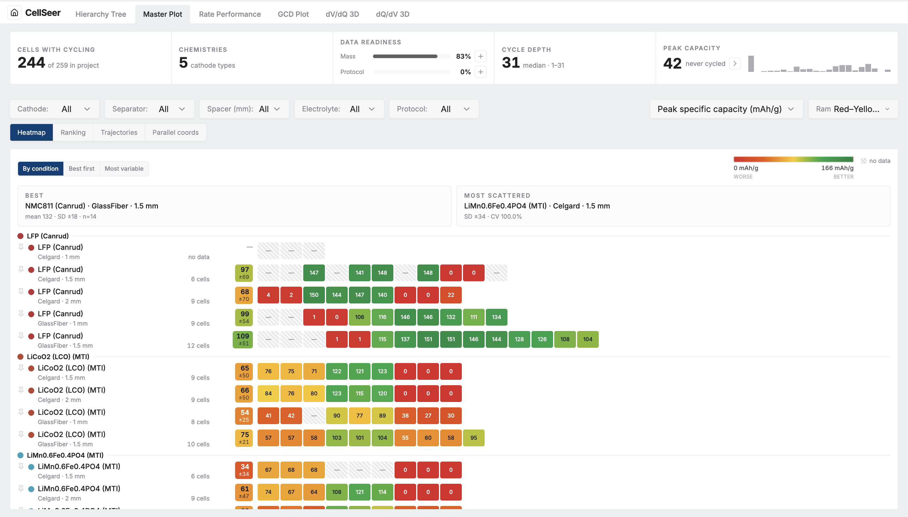

CellSeer
Developer docs
CellSeer
Developer docs
First steps
Install CellSeer, open a project, and reach your first campaign view in minutes.
Setup — two ways to use CellSeer
1 · Hosted
Open your lab's CellSeer URL in a browser and pick a project. Nothing to install.
2 · Run locally
Full web app on your machine — backend (FastAPI) + frontend (Vite):
cd backend && pip install -r requirements.txt
python -m uvicorn backend.api:app --host 127.0.0.1 --port 8000 (from the repo root)
cd frontend && npm install && npm run dev
then open http://localhost:8080.
Or one container: docker compose up (see DEPLOY.md).
Your first session

- Open a project from the home gallery — hosted URL or local dev server.
- Browse the hierarchy tree to filter by cathode, separator, or spacer.
- Open Master Plot for the campaign heatmap — every condition as a row, replicates coloured by performance.
- Drill into a cell on Rate Performance, GCD, dQ/dV, or dV/dQ for per-cell curves.

How the web app fits together
cycler exports (Neware XLSX / BioLogic MPT·MPR / DIGIBAT robot lab)
│ POST /api/upload or DIGIBAT incremental sync
▼
PostgreSQL metadata (cells, datasets, protocols) + Parquet data lake (time series)
│ REST API (cached, gzip, orjson)
▼
React web app ── Hierarchy Tree → Master Plot → Rate / GCD / dQ/dV / dV/dQ
(browse) (campaign (per-cell drill-down)
at a glance)Dashboard views
| View | Tab | Answers |
|---|---|---|
| GCD (V vs Q) | GCD Plot | Curve shape, polarisation, capacity per cycle |
| Cumulative GCD | GCD Plot | Whole-test trajectory in one panel |
| Voltage vs time | GCD Plot | Formation behaviour, protocol sanity |
| dQ/dV | dQ/dV 3D | Phase transitions, peak drift with ageing |
| dV/dQ | dV/dQ 3D | Electrode balancing, capacity-axis features |
| Rate performance | Rate Performance | Capacity vs cycle across C-rates |
| Condition heatmap | Master Plot | Replicates × conditions, coloured by metric |
| Condition ranking | Master Plot | Which condition wins; replicate scatter |
| Parallel coordinates | Master Plot | Design factors vs capacity; click a line to select a cell |
| Hierarchy tree | Hierarchy Tree | Navigate cathode → separator → spacer → cell |